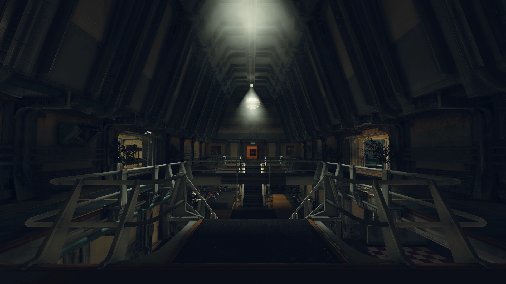
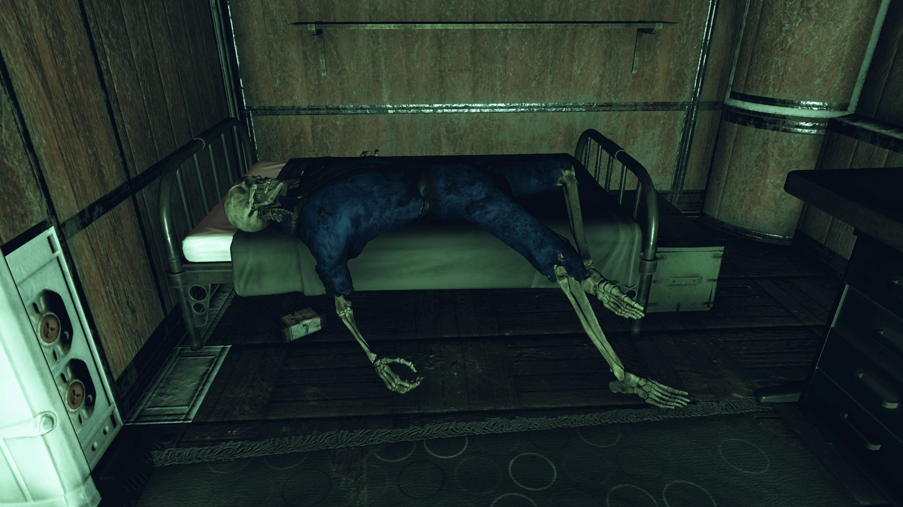
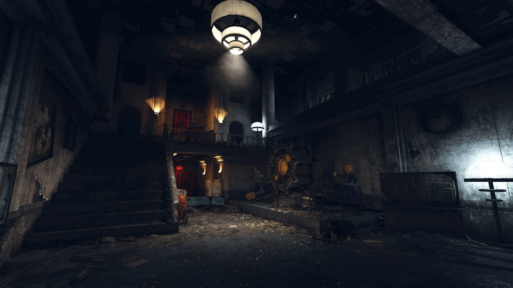
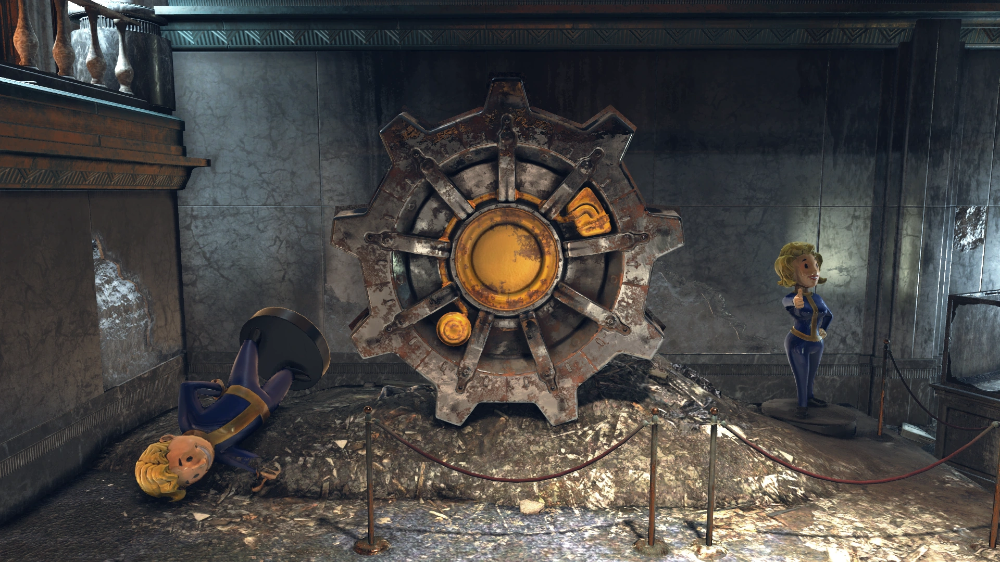
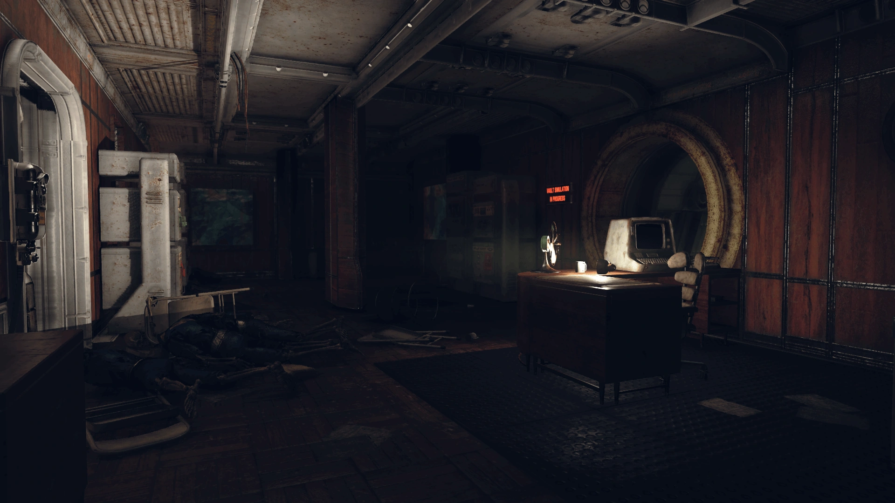
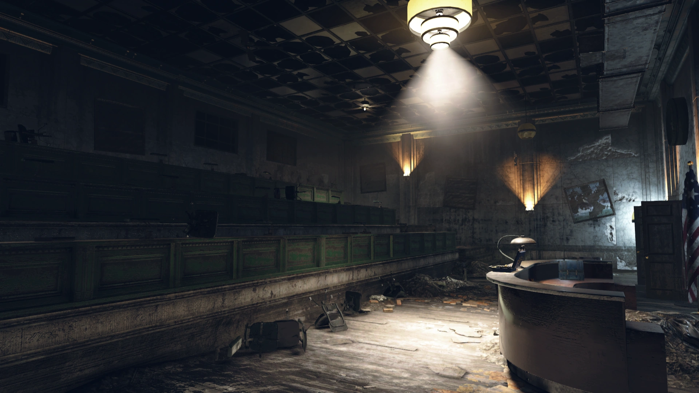

Vault-Tec University
Vault-Tec大学（VTU）
概要
Vault-Tec大学（VTU）は、アパラチアの森林地帯、モーガンタウンにあるロケーションである。
その主な目的は、Vaultの監督官候補生やVault-Tec社員の訓練と教育だった。
背景
大学の歴史
VTUとなった大学はかつてモーガンタウンの地元大学だった。2031年、Vault-Tecが大学を買収し「Vault-Tec大学」として再ブランド化した。
以降、Vault-Tecの多くのトップエグゼクティブや研究者が教授陣や卒業生に名を連ねた。
Vault-Tecの支援とVaultプログラムへの一般の関心増大により、大学はモーガンタウンの経済復興に貢献した。
しかし次の46年間で、同社はクラシックな教育に関連する授業や科目を段階的に廃止し、Vault-Tec従業員のための職業訓練校へと変貌させた。
大多数の教授が解雇され、同社のプロフィールに関連する科目を教える者だけが給与リストに残された。
それにもかかわらず、Vault-Tecは依然として全米のどの大学よりも優秀な学生がいると大学を宣伝していた。

同社はVTUを決定版のVault訓練施設にするために費用を惜しまなかった。
医学訓練（Vault-TecのSpeedTeach方法論で10年の課程を3ヶ月に短縮）、心理学、リーダーシップなどの詳細な授業に加え、大学のミッションステートメントによれば、多様な学生たちがVaultでの生存に関するあらゆる教育に没頭できるユニークな環境を提供していた。
大学の基盤にはシミュレーション・シェルターが組み込まれ、高度なメインフレーム、軍用グレードのロボティクス、コンパクトな核融合パワーシステムなど、通常制限されている技術が民間・政府部門から提供されていた。
VTUの教授陣の少なくとも一部は、Vault-Tecのより暗い活動を認識していた。
大学のデータベースには、Vault 76を含むアパラチア全てのVaultの登録簿と、それぞれの実験目的が含まれていた。
Vault-Tecを通じて大学は連邦政府や米軍と直接のつながりを持ち、大学幹部は制限区域でそうした人物と頻繁に会合していた。
シミュレーションVault

シミュレーションVaultは本物のVaultの感覚と居住体験を忠実に再現していた。
監督官候補生は論文と実験提案を提出し、シミュレーションVaultがロックダウンされた際の試験運用で実施することが求められた。
学生たちは本当にVaultに封印されたかのように任務を遂行した。
もちろん、学生たち自身も監視されており、Vault-Tecに有用なデータを提供していた。
最後の実験と悲劇
最後の試験運用はドリュー・コリングスワースの提案に基づいていた — 通常の食料をオリジナルの食品ペーストで代替するという実験だった。
しかし、ハーランド・エリオット学部長はコリングスワースを、より「興味深い」実験へと誘導した。
学部長は密かに、動脈硬化を引き起こす物質を食品ペーストに添加させ、急速な循環器系の衰弱を観察する実験に変えた。
コリングスワースにはこれが秘密にされていた。学部長にとっては、Vault内の秩序が急速に崩壊する様を観察するだけの実験だった。
試験運用は2077年10月15日に開始された。Vaultは4週間封鎖され、食品ペーストが供給された。
- 10月23日 — 大戦が勃発。しかしシミュレーションVaultは無傷で、実験は通常通り続行された。
- 10月26日 — メンテナンススタッフの一人が、動脈硬化物質による心臓発作で死亡。
- 10月27日 — 検死で監督官の懸念が確認された。
- 10月31日 — 通常配給への切り替えを試みるも、闇市場と追加需要で備蓄が枯渇。住人がコリングスワースに対して公然と反乱。
- 11月1日 — コリングスワースが外部に必死の救援要請をするも、モーガンタウンはそれどころではなく、回答なし。
- 11月2日 — 住人が監督官のオフィスを包囲し、突破。コリングスワースは寝室に閉じこもった。
最終的にVault内の全員が死亡した — 餓死するか、自ら命を絶った。

戦後の出来事
B.O.S.（ブラザーフッド・オブ・スティール）がフォート・ディファイアンスへ移転した後、施設の自動研究ターミナルを使用してスコーチドのDNAサンプルを分析するため、2名の隊員を派遣した。
しかしダニーとモンゴメリー見習いの両名は、施設内のフェラル・グールによって殺害された。
2103年までに、ギルバート・ホプソンがアメリカのすべての偉大な学術機関を訪問する旅の一環として、メインの大学ビルの外に一時的に居住していた。
また、大学の執行権限は名目上Professor-bot（自動教育ロボット）に移され、卒業生を輩出するという指令を続行していた。
同年、Vault 76の監督官とVault 76の住人たちが大学を訪れ、Vault 79の噂を調査するために制限区域へのアクセスを試みた。
Professor-botはVaultシミュレーション試験に合格してVTUの「卒業生」になることを条件にこれを許可した。
卒業後、制限区域でVault 79の目的が判明した — 米国の金塊の保管庫だったのだ。
レイアウト

大学は3つの地上建物と、それらを地下で結ぶ大規模なシミュレーションVaultで構成される広大なキャンパスである。
メインビル（東棟）は、レプリカのVaultドアが展示された大きなロビーに通じる。
1階には施設管理事務所（アーマー作業台あり）、睡眠・住居ラボ、体力活動ラボがある。
2階にはユージン・デイビッドソン講堂（スチーマートランク付き）、倉庫、食品調理ラボがある。

北棟はVault-Tecによって保存され、管理棟に転用された。
1階にはシミュレーションVault入口（Room 101, 監督官オフィスへ接続）、医療緊急室（102）、施設訓練室（103）、若手住人育成室（104）がある。
2階にはコンピューターラボ（201）、入学部長オフィス（202）、監督官訓練学部長オフィス（203）、ラウンジ（204）がある。
南棟は完全に改装され、赤レンガの外観の下に住人や学生のための主要入口が隠されている。

住人
- Brass — ロボット
- Estella — ロボット
- Gilbert Hopson — 外部に居住
- Kelemen
- Loris — ロボット
- Professor-bot — 自動教育ロボット（事実上の大学リーダー）
- Robinson — ロボット
注目のアイテム
外部
- The Battle of Morgantown（ホロテープ） — 大学北東、スケルトンの横の簡易トイレ内。
- Postcard from Elizabeth（メモ） — 大学北のアパートメントビル内。
内部
- Overseer's journal, entry 4（ホロテープ） — 中央棟3階の教室の机上。
- First day of school（ホロテープ） — Room A2のテーブル上。
- Last day of school（ホロテープ） — Room 204のテーブル上。
- Vault-Tecボブルヘッド×3（ランダム出現）
- マガジン×3（ランダム出現）
- Plan: Chemistry workbench — Room 102、ベッド足元の棚上。
- レシピ×5（各所配置）
著名な関係者
教職員
- マイケル・ブレイク — 言語学教授
- エリック・デマルコス — コンピューターサイエンス上級教授、元学部長
- ハーランド・エリオット — 監督官訓練学部長
- Professor-bot — 教授ロボット
有名な学生・卒業生
- ジュディス・ブラックウェル — サム・ブラックウェル上院議員の娘
- ドリュー・コリングスワース — 食品代替実験の開発者、シミュレーションVaultの監督官
- ペネロピ・ホーンライト — ホーンライト・インダストリアル一族、2070年卒
- Vault 76の監督官 — 核融合で学位取得
- アリシャ・パーカー — 「モーガンタウンの歴史」シリーズの著者
- カルビン・ヴァンロウ（Aries） — 2072年卒
発見できるホロテープ・メモ
The Battle of Morgantown（ホロテープ）
大学北東の簡易トイレ内、スケルトンの横で発見。
ヴァネッサ: 今日もまた新入生のグループを失った。
夜の闇に紛れてはしごを登り始めるよう命令したのに、罠だった。
はしご全体に油が塗ってあって、屋根の連中が全員に火をつけた。
もうこんなこと続けられない！
私たちは町の出入り口の道路を制圧して兵糧攻めにしようとしているのに、あいつらはどこからか食料を見つけてくる！
空の食料箱を嘲笑うように投げ落としてくるようにもなった。
あそこでどうやって生き延びてるんだ？ どこから物資を手に入れてるんだ？
Overseer's journal, entry 4（ホロテープ）
中央棟3階「ユージン・デイビッドソン講堂」の机上で発見。クエスト「Personal Matters」中に入手。
監督官: 監督官の個人日誌。
Vault-Tecで4年間、生き、学び、息をしてきた。
監督官コースを優秀な成績で卒業した。
父はとても誇りに思ってくれた。もう重い病気だったのに、わざわざ来てくれた。
きっと然るべき人々に印象を与えたのだろう——次に空いた監督官ポストを提示された。
卒業したばかりだった！ 本来なら何年もかかるはずのことだ。
もしかしたら、戦争が避けられないと分かっていたのかもしれない。
Vault 76が建設されると聞いた時、あまりの興奮で椅子から飛び跳ねて、リビングで小さなダンスをした。
何が起きても、アパラチアは安全になるのだ。
エヴァンはそのタイミングでプロポーズしてきた、あのおばかさん。
あのニュースの後なら私がノーと言わないと分かっていたのだ。
彼は誰よりも私のことを分かっていた……
父はエヴァンと私が同居を始めて数ヶ月後に亡くなった。
本当にバージンロードを一緒に歩きたがっていた。
まあ、私だってちゃんと歩けなかったけど……
*涙をこらえながら咳き込み、ため息*
そろそろ家に帰る時だと思う。エヴァンにはそれだけの恩がある。
First day of school（ホロテープ）
Room A2（睡眠・住居ラボ）のテーブル上で発見。
スコット・ワーナー: 期待以上だ！
ウェルチで育った俺がこんなチャンスをもらえるなんて思ってもみなかった！
親父は「都会にのぼせるな」と言ったけど、もう興奮で立っていられない！
この授業リストは最高で、最高の教授陣から学べる。
エリオット学部長は伝説だし、ブレイク教授は閉鎖環境における心理学の教科書を書いた人だ。
まだ早いけど、小学生の頃から卒業論文に取り組んできた。
エリオット学部長と相談する予約も取った。
くだらないちっぽけなアイデアかもしれないけど、学部長の助けがあれば本当に特別なものになると思う。
選択的育種は最も難しい課題だけど、Vaultの閉鎖環境こそ、これらのアイデアを統制された環境でテストするのに最適な場所だと思う。
歴史を研究してきて、誰も考えたことのないアングルを持っている。
Last day of school（ホロテープ）
Room 204（2階ラウンジ）のテーブル上で発見。
トリシャ・ミラー: また上司候補に断られた。
ここに来たばかりの頃、統制Vaultの監督官以外になるなんて言われても信じなかっただろう。
でも今はもう少し現実的になった。
最も注目のポストであるVault 96の監督官は、私に見向きもしなかった。
不採用通知がテンプレートの手紙だったんだぞ、まったく。
このままじゃ、西海岸に飛ばされてVault 29で、うるさい金持ちのティーンエイジャーたちと一緒に清掃員をやる羽目になる。
Vault-Tecが縁故主義とゴマすりの巣窟であることは、もう明らかだ。
全講義に出席して全レポートを書かないと出世できない——情熱への敬意がない！
ここの学生の中には、Vault-Tecが何を意味するか分かっていない奴もいる！
一方で私は3度目の卒論に挑戦しなきゃならない。
またエリオット学部長に却下されるのも面白いだろうさ。
とにかく金がないから、できれば最後のシミュレーションVaultの論文プロジェクトに参加しようと思う。
この子（ドリュー・コリングスワース）は普通そうだし、実験テーマが食料だから、少なくとも美味しいものは食べられるはず。
Postcard from Elizabeth（メモ）
大学北のアパートメントビル内、モノレール入口の壁の穴から入った先の机の上で発見。
パパへ！！
ママがこのおてがみをかくのをてつだってくれました よんでくれるといいな。
ママがわたしのもじとスペルをおしえてくれてます
よんでくれるとイイナ
だいすき！
あなたのむすめ
エリザベス
裏話
Vault-Tec大学は、実在するウエストバージニア州モーガンタウンのウエストバージニア大学（WVU）をモデルにしている。
メインビルは実在するウッドバーン・ホールと多くの類似点を共有している。
登場作品
Vault-Tec大学はFallout 76に登場し、TVシリーズ「Vault Seller's Survival Guide」のエピソード「Bud's Buds!」でも言及される。
ギャラリー

Fallout 76の中でも最もロアが豊かで、物語の密度が高いロケーションの一つ。
2031年にVault-Tecが地元大学を買収し、46年かけて職業訓練校に変えていった経緯からして、企業の支配力の恐ろしさが伝わります。
シミュレーションVaultの悲劇は、Vault実験の縮図そのもの。
食品ペーストに密かに動脈硬化物質を混入する学部長エリオットの冷徹さ、大戦が勃発しても実験を継続する異常さ、そして備蓄の枯渇と反乱、最終的な全員死亡という結末。
Vault 76の監督官がここで学び、卒業したという事実も、ゲームの物語全体に深みを加えています。
2103年には「卒業試験」を受けてVTUの卒業生になれるというProfessor-botの設定も、ユーモアと悲しみが入り混じるFalloutらしい演出です。
This article was created by translating and editing Vault-Tec University from Nukapedia: The Fallout Wiki.
Licensed under the Creative Commons Attribution-Share Alike License (CC BY-SA 3.0).
© Overseer Mohi's Terminal — Fallout Lore Archive
コミュニティ維持のため、寄付を受け付けております。
COMMENTS